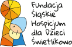

1–4 października 2026, Jezioro Paprocany, Tychy
Backyard na Dziko
„Przez 72h mogę pokonać blisko 500 km, ale to nie ten wynik jest najważniejszy.”
do startu pierwszej pętli, czwartek 1 października, 10:00
1–4 października 2026
Backyard na Dziko
72 godziny wokół Jeziora Paprocany. Co pełną godzinę pętla 6,7 km, przez cały czas transmisja na żywo. Każdy kilometr to cegiełka do „Tu Się Tuli”, stacjonarnego hospicjum dla dzieci.
do startu

123456- Start
- czwartek, 1 października, 10:00
- Miejsce
- Jezioro Paprocany, Tychy
- Pętla
- 6,7 km co pełną godzinę
- Tempo
- 6:00–6:20 min/km
- Cel
- „Tu Się Tuli”, Fundacja Śląskie Hospicjum dla Dzieci Świetlikowo
Formuła
Co pełną godzinę dzwon. I tak do skutku.
- Co równą godzinę wybrzmiewa dzwon do startu.
- Zawodnicy mają 60 minut, by przebiec pętlę o długości 6,7 km.
- Jeśli pokonają ją w 40 minut, do startu kolejnej mają 20 minut odpoczynku.
- Z upływem godzin i kilometrów z rywalizacji rezygnują kolejni zawodnicy.
- Wyzwanie wygrywa ten, który jako jedyny samotnie pokona ostatnią pętlę.
Formułę wymyślił Gary Cantrell, znany jako Lazarus Lake. Pierwszy Big’s Backyard Ultra odbył się w 2011 roku na jego podwórku w Bell Buckle w Tennessee. Pętla ma 4,167 mili, bo 24 takie pętle dają równo 100 mil.
Backyard na Dziko to wyzwanie inspirowane tą formułą, ale bez rywali. Plan to 72 pętle, czyli trzy pełne doby.
„To bieg na wytrzymałość ciała i głowy, który nigdy nie wiesz ile potrwa.”
Na trasie
Nie musisz robić ultra.
-
Pobiegnij pętlę
Jedną, kilka albo zostań na dłużej. Tempo 6:00–6:20 min/km, czyli spokojny bieg wokół jeziora.
-
Przyjedź rowerem
Nie trzeba nawet biec. Pętlę można przejechać obok mnie i z bliska poczuć, czym jest ultra.
-
Kibicuj i udostępniaj
Możecie dodać mi siły, nie wirtualnie, a obecnością na trasie. Udostępniaj zbiórkę, szczególnie wtedy, gdy będę biegł.
„Możecie z bliska poczuć, czym jest ultra.”
72 godziny
Trzy doby, trzy noce.
Dla kogo
TuSieTuli

Swój bieg dedykuję dzieciom z Fundacji Śląskie Hospicjum dla Dzieci Świetlikowo, które zbiera fundusze na budowę Śląskiego Hospicjum Stacjonarnego dla Dzieci TuSieTuli. To miejsce da chorym maluchom i ich bliskim spokój, ciepło i ukojenie w najtrudniejszych chwilach.
Dziecięcych hospicjów wciąż jest za mało. TuSieTuli powstaje po to, by dzieci, które nie mogą być u siebie, mogły razem z rodzicami poczuć się bezpiecznie w miejscu, które będzie dla nich drugim domem. Dla Świetlikowa pływałem już w 2024 roku, przez 24 godziny w Wodnym Parku Tychy.
Maj 2026
Pierwszy backyard
29 pętli
Debiut w tej formule przyszedł 1 maja na Sowi Backyard Ultra w Pieszycach. Przebiegłem 29 pętli, blisko 195 km. Bieg był połączony ze zbiórką „W kółko dla Kwadratu” na wakacje dla dzieci z tyskiej Placówki Pieczy Zastępczej „Kwadrat”, która zamknęła się kwotą 80 985 zł.
Na Paprocanach będą 72 godziny, jezioro i każdy, kto przyjdzie.
W kółko dla KwadratuPorozmawiajmy o tym, co możemy zrobić razem.
Szukasz partnera dla swojej marki lub prelegenta na wydarzenie? Napisz kilka słów o swoim pomyśle. Dopasujemy formę współpracy do Twoich potrzeb.